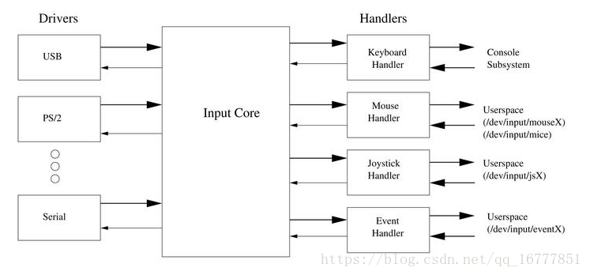
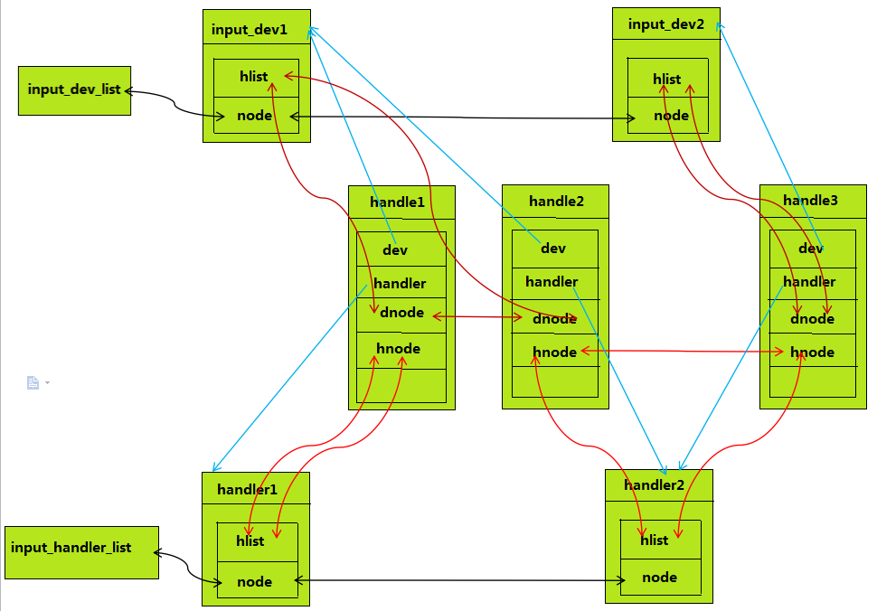

4.12.1. 输入子系统框架
4.12.1.1. 概述
input驱动程序是linux输入设备的驱动程序，分成游戏杆(joystick)、鼠标(mouse和mice)、键盘(keyboard)、事件设备(event)。其中事件设备驱动程序是目前通用的驱动程序， 可支持键盘、鼠标、触摸屏等多种输入设备
linux input子系统将一个输入设备的输入过程分成了设备驱动(input device driver)和事件驱动(input event driver)两个层。前者负责从底层硬件采集数据，后者负责与用户程序接口， 将采集到的数据分发给不同的用户接口。通过这样的设计，将千差万别的设备统一到了为数不多的几种驱动接口上，同一种事件驱动可以用来处理多个同类设备，同一个设备也可以和多种 事件驱动相衔接。而事件驱动和设备驱动则由输入核心层进行连接，匹配
首先输入子系统是分为三层的，面对应用层的是 输入事件层(handler) ，处理底层驱动的是 输入设备层(dirver或device) 。而衔接dev和handler的则是 输入核心层(core) 。
真个输入子系统的核心层起到承上启下的作用
上：输入事件驱动层 （打包数据，面向应用）
中：输入核心层 （向下提供注册接口，向上给具体的hander发送数据）
下：输入设备驱动层 （底层驱动，面向硬件）

应用程序使用input子系统的核心是，对驱动层打包好的数据进行分析，其中打包的数据结构如下
/*
* The event structure itself
*/
struct input_event {
struct timeval time; //表示输入的时间
__u16 type; //表示输入设备是哪种类型，鼠标键盘等
__u16 code; //不同的type有不同的code，比如键盘的哪个按键等
__s32 value; //根据不同的type和code决定，比如键盘A键按下和松开，鼠标的移动方向等
};
一个设备可能对应两个设备驱动，比如鼠标既可以对应mouse也可以对应event。event事件设备驱动程序是通用的，也是目前的主流。后面的内容将以此为例进行分析
一次鼠标按下事件为例，说明input输入子系统的工作过程
设备驱动层:当鼠标左键被按下时就会触发中断，然后去执行中断注册的处理函数，在函数中会读取硬件寄存器来判断按下的是哪个按键和状态
然后将按键信息上报给input core层，input core层处理完成之后会上报给input event层，input event层会将我们的输入事件封装成一个input_event结构体放入到一个缓冲区
应用层read就会将缓冲区中的数据读取出去
输入子系统整体由核心层维护，主要使用两条链表，维护着两个层
static LIST_HEAD(input_dev_list); //维护着所有的dev
static LIST_HEAD(input_handler_list); //维护着所有的handler
4.12.1.2. 数据结构
4.12.1.2.1. input_handler
struct input_handler {
void *private;
//用于向上层上报输入事件的函数
void (*event)(struct input_handle *handle, unsigned int type, unsigned int code, int value);
void (*events)(struct input_handle *handle,
const struct input_value *vals, unsigned int count);
bool (*filter)(struct input_handle *handle, unsigned int type, unsigned int code, int value);
//函数用来匹配handler与input_dev
bool (*match)(struct input_handler *handler, struct input_dev *dev);
//当handler与input_dev匹配成功之后用来连接
int (*connect)(struct input_handler *handler, struct input_dev *dev, const struct input_device_id *id);
void (*disconnect)(struct input_handle *handle);
void (*start)(struct input_handle *handle);
bool legacy_minors;
int minor; //该handler编号(在input_table数组中用来计算数组下标), input_table数组就是input子系统用来管理注册的handler的一个数据结构
const char *name;
const struct input_device_id *id_table; //里面保存着dev和handler能匹配在一起的信息
struct list_head h_list;
struct list_head node;
};
用此数据结构来表述一个handler，主要是面向应用层的。 node用于把该handler链接在input_handler_list链表上，h_list用于指向handle
4.12.1.2.2. input_handle
handle: 用于将input_dev和handler连接起来，对应于一个具体的设备文件
/**
* struct input_handle - links input device with an input handler
* @private: handler-specific data
* @open: counter showing whether the handle is 'open', i.e. should deliver
* events from its device
* @name: name given to the handle by handler that created it
* @dev: input device the handle is attached to
* @handler: handler that works with the device through this handle
* @d_node: used to put the handle on device's list of attached handles
* @h_node: used to put the handle on handler's list of handles from which
* it gets events
*/
struct input_handle {
void *private;
int open; //打开计数
const char *name;
struct input_dev *dev; //用来指向该handle绑定的input_dev结构体
struct input_handler *handler; //用来指向该handle绑定的handler结构体
struct list_head d_node;
struct list_head h_node;
};
这个数据结构用来连接dev和handler，这里要说明的是一个dev可能会连接多个handler，所以会有多个handle负责连接dev和多个handler.
4.12.1.2.3. input_dev
input_dev代表着具体的输入设备，负责底层的实现，它直接从硬件中读取数据，并以事件的形式转发，包括该输入设备支持的输入类型，键值等.
struct input_dev {
const char *name; //设备名称
const char *phys; //设备在分层系统的路径
const char *uniq;
struct input_id id; //设备信息
//可以上报的事件类型有哪些，用位图来表示
unsigned long propbit[BITS_TO_LONGS(INPUT_PROP_CNT)];
unsigned long evbit[BITS_TO_LONGS(EV_CNT)];
unsigned long keybit[BITS_TO_LONGS(KEY_CNT)];
unsigned long relbit[BITS_TO_LONGS(REL_CNT)];
unsigned long absbit[BITS_TO_LONGS(ABS_CNT)];
unsigned long mscbit[BITS_TO_LONGS(MSC_CNT)];
unsigned long ledbit[BITS_TO_LONGS(LED_CNT)];
unsigned long sndbit[BITS_TO_LONGS(SND_CNT)];
unsigned long ffbit[BITS_TO_LONGS(FF_CNT)];
unsigned long swbit[BITS_TO_LONGS(SW_CNT)];
unsigned int hint_events_per_packet;
unsigned int keycodemax;
unsigned int keycodesize;
void *keycode;
int (*setkeycode)(struct input_dev *dev,
const struct input_keymap_entry *ke,
unsigned int *old_keycode);
int (*getkeycode)(struct input_dev *dev,
struct input_keymap_entry *ke);
struct ff_device *ff;
unsigned int repeat_key; //重复上报键值，比如键盘A按着一直不松手
struct timer_list timer; //重复上报时间
int rep[REP_CNT];
struct input_mt *mt;
struct input_absinfo *absinfo;
unsigned long key[BITS_TO_LONGS(KEY_CNT)];
unsigned long led[BITS_TO_LONGS(LED_CNT)];
unsigned long snd[BITS_TO_LONGS(SND_CNT)];
unsigned long sw[BITS_TO_LONGS(SW_CNT)];
int (*open)(struct input_dev *dev); //设备open函数
void (*close)(struct input_dev *dev);
int (*flush)(struct input_dev *dev, struct file *file);
int (*event)(struct input_dev *dev, unsigned int type, unsigned int code, int value); //上报事件
struct input_handle __rcu *grab;
spinlock_t event_lock;
struct mutex mutex;
unsigned int users;
bool going_away;
struct device dev;
struct list_head h_list; //用来挂接这个struct input_dev和所有struct handler的链表头
struct list_head node; //
unsigned int num_vals;
unsigned int max_vals;
struct input_value *vals;
bool devres_managed;
};
以上几个数据结构之间的关系可以用下面的图示说明

下面是系统目前为设备定义的次设备号信息
#define JOYDEV_MINOR_BASE 0 /* 游戏手柄类次设备号开始位置 */
#define JOYDEV_MINORS 16 /* 游戏手柄类次设备号个数 */
#define MOUSEDEV_MINOR_BASE 32 /*鼠标类次设备号开始位置 */
#define MOUSEDEV_MINORS 32 /* 鼠标类次设备号个数 */
#define EVDEV_MINOR_BASE 64 /*通用事件类次设备号开始位置 */
#define EVDEV_MINORS 32 /*通用事件类次设备号个数 */
4.12.1.3. 输入子系统初始化
static int __init input_init(void)
{
int err;
err = class_register(&input_class);
if (err) {
pr_err("unable to register input_dev class\n");
return err;
}
err = input_proc_init();
if (err)
goto fail1;
/* 一次性注册完所有的次设备 */
err = register_chrdev_region(MKDEV(INPUT_MAJOR, 0),
INPUT_MAX_CHAR_DEVICES, "input");
if (err) {
pr_err("unable to register char major %d", INPUT_MAJOR);
goto fail2;
}
return 0;
fail2: input_proc_exit();
fail1: class_unregister(&input_class);
return err;
}
subsys_initcall(input_init);
start_kernel中会调用subsys_initcall函数来完成input_init的的调用
在dev和handler匹配上之后，会调用connect, 不同的输入设备有不同的connect函数
/*
* Create new evdev device. Note that input core serializes calls
* to connect and disconnect.
*/
static int evdev_connect(struct input_handler *handler, struct input_dev *dev,
const struct input_device_id *id)
{
struct evdev *evdev;
int minor;
int dev_no;
int error;
minor = input_get_new_minor(EVDEV_MINOR_BASE, EVDEV_MINORS, true);
if (minor < 0) {
error = minor;
pr_err("failed to reserve new minor: %d\n", error);
return error;
}
evdev = kzalloc(sizeof(struct evdev), GFP_KERNEL);
if (!evdev) {
error = -ENOMEM;
goto err_free_minor;
}
INIT_LIST_HEAD(&evdev->client_list);
spin_lock_init(&evdev->client_lock);
mutex_init(&evdev->mutex);
init_waitqueue_head(&evdev->wait);
evdev->exist = true;
dev_no = minor;
/* Normalize device number if it falls into legacy range */
if (dev_no < EVDEV_MINOR_BASE + EVDEV_MINORS)
dev_no -= EVDEV_MINOR_BASE;
dev_set_name(&evdev->dev, "event%d", dev_no);
evdev->handle.dev = input_get_device(dev);
evdev->handle.name = dev_name(&evdev->dev);
evdev->handle.handler = handler;
evdev->handle.private = evdev;
evdev->dev.devt = MKDEV(INPUT_MAJOR, minor);
evdev->dev.class = &input_class;
evdev->dev.parent = &dev->dev;
evdev->dev.release = evdev_free;
device_initialize(&evdev->dev);
error = input_register_handle(&evdev->handle);
if (error)
goto err_free_evdev;
cdev_init(&evdev->cdev, &evdev_fops);
evdev->cdev.kobj.parent = &evdev->dev.kobj;
error = cdev_add(&evdev->cdev, evdev->dev.devt, 1);
if (error)
goto err_unregister_handle;
error = device_add(&evdev->dev);
if (error)
goto err_cleanup_evdev;
return 0;
err_cleanup_evdev:
evdev_cleanup(evdev);
err_unregister_handle:
input_unregister_handle(&evdev->handle);
err_free_evdev:
put_device(&evdev->dev);
err_free_minor:
input_free_minor(minor);
return error;
}
真正的设备注册主要由cdev_init和cdev_add函数完成